UE24CS352A Machine Learning · Technical Report | Repository: https://github.com/SunayHegde/ML-Hackathon
Every number, table and figure in this report is produced by the scripts in the repository (results/, results/figures/, maps/).
Project team: PT-030
| SRN | Name |
|---|---|
| PES1UG24AM903 | Sunay Rajakumar Hegde |
| PES1UG25AM804 | J Karthik |
| PES1UG25AM805 | Karthik S Prabhu |
| PES1UG25AM806 | N Sharath |
We treat map-matching as candidate ranking followed by sequence decoding.
Each trip folder contains four files:
.track: longitude, latitude, time..nodes: longitude, latitude. The row index is the node id..arcs: from-node and to-node. The row index is the arc id, and arcs are directed..route: the chronological sequence of reference arc ids.Each trip has its own road network, cropped around the trip. Trips come from many countries. A GPS row does not correspond to a route row: there are 1,315 fixes but only 525 route arcs in trip 00000001.
| Partition | Trips | Fixes (total / median / min / max) | NaN / invalid coords | Non-increasing timestamps | Steps exactly 1 s | Gaps > 10 s | Speed jumps > 216 km/h | Arcs per network (median) | Isolated nodes | Route arcs connected |
|---|---|---|---|---|---|---|---|---|---|---|
| train | 80 | 208,417 / 1,529 / 361 / 19,313 | 0 / 0 | 0 | 93.8 % | 590 | 546 | 19,527 | 0 | 99.93 % |
| student_test | 10 | 19,160 / 1,420 / 262 / 3,958 | 0 / 0 | 0 | 98.2 % | 27 | 2 | 13,145 | 0 | 99.97 % |
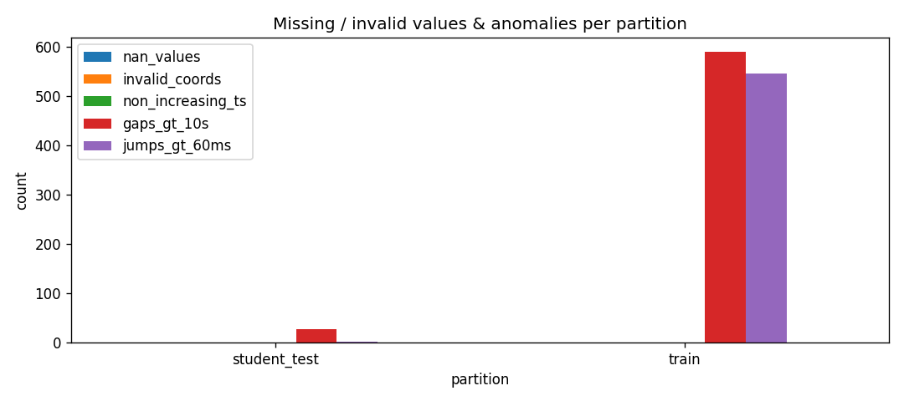
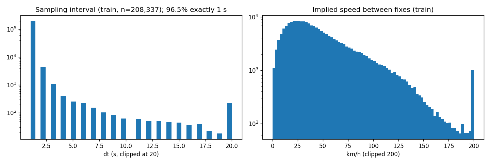
Missing-value and anomaly analysis per partition (left); sampling interval and implied speed, train partition (right).
.route file has no timestamps. We align fixes to route positions with a monotone dynamic program that minimises the total point-to-arc distance, subject to the route position never decreasing: D[t,j] = c[t,j] + minj'≤j D[t-1,j']. The reference arc of fix t is route[j(t)].The 21 features, by group:
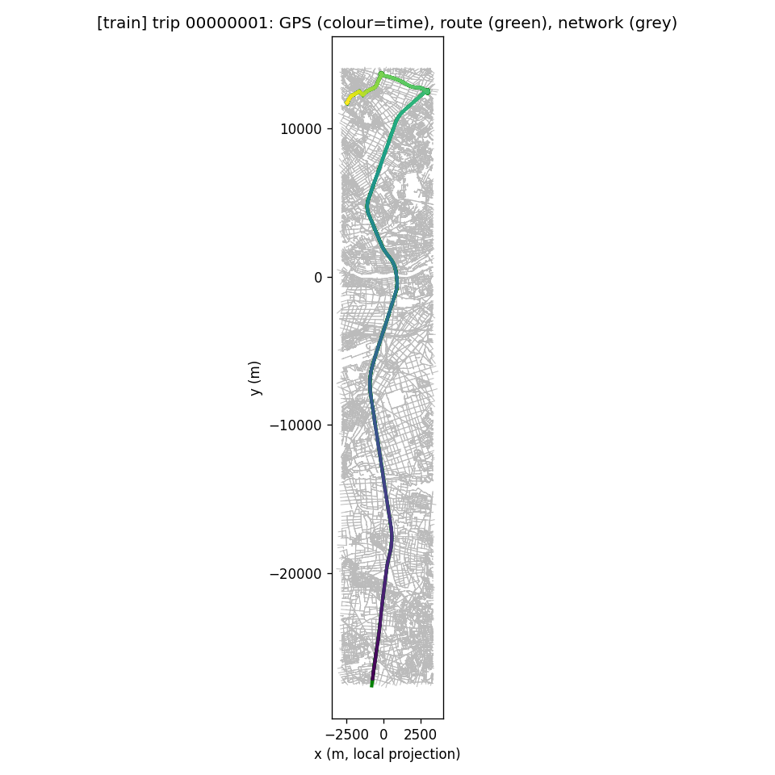
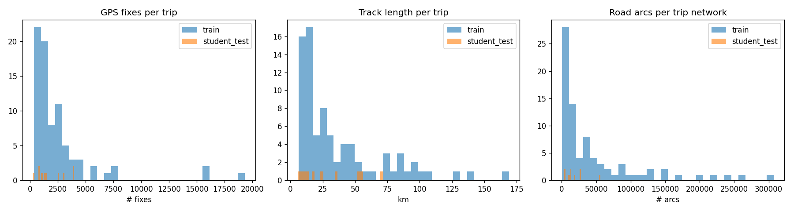
GPS trajectory and road network, train trip 00000001 (left); fixes, length and network size per trip, both partitions (right).
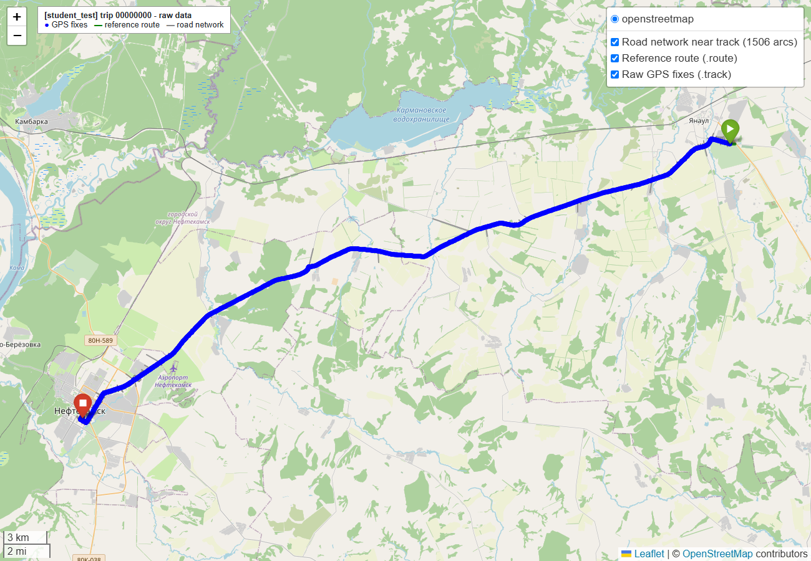
Folium map, student_test trip 00000000: raw GPS fixes (blue), reference route (green), road network (grey), with layer control. File: maps/eda_trip_student_test_00000000.html.
Protocol.
Primary selection metric: CV macro F1. Positives are rare (about 1 in 8 candidates), so plain accuracy is misleading. Macro F1 weights both classes equally. We also check Top-1 and log loss, because the HMM consumes the probabilities.
| Model | Algorithm family | Key configuration | CV macro F1 (±sd) | Top-1 accuracy (student-test) | Route continuity | Student-test macro F1 | Log loss (test) | Inference time |
|---|---|---|---|---|---|---|---|---|
| 1 Gaussian NB | Probabilistic | var_smoothing 1e-9 | 0.842 ± 0.030 | 0.842 | 0.927 | 0.842 | 0.608 | 0.003 ms/fix |
| 2 Logistic Regression | Linear | StandardScaler, L2, C=1 | 0.918 ± 0.013 | 0.872 | 0.933 | 0.919 | 0.102 | 0.003 ms/fix |
| 3 KNN | Instance-based | k=31, distance-weighted, scaled, 150k-row sample | 0.919 ± 0.013 | 0.869 | 0.938 | 0.922 | 0.120 | 2.061 ms/fix |
| 4 MLP | Neural network | (64,32) ReLU, Adam 1e-3, early stop, 400k sample | 0.932 ± 0.009 | 0.886 | 0.945 | 0.932 | 0.076 | 0.008 ms/fix |
| 5 Random Forest | Bagging ensemble | 200 trees, depth 18, leaf 10, 600k sample | 0.936 ± 0.010 | 0.897 | 0.944 | 0.937 | 0.069 | 0.038 ms/fix |
| 6 LightGBM | Gradient boosting | 400 trees, lr 0.05, 63 leaves | 0.937 ± 0.012 | 0.905 | 0.951 | 0.943 | 0.067 | 0.049 ms/fix |
Some models were trained on row subsamples, and KNN was not persisted. Both were done only to keep training time practical, and the samples consist of whole fixes. Training times were 0.6 s (NB), 4.5 s (LR), 0.1 s (KNN fit), 55 s (MLP), 101 s (RF) and 48 s (LightGBM). CV Top-1 values are lower than test Top-1, roughly 0.78–0.82, because the CV folds contain the anomalous parked trips 00000054 and 00000033.
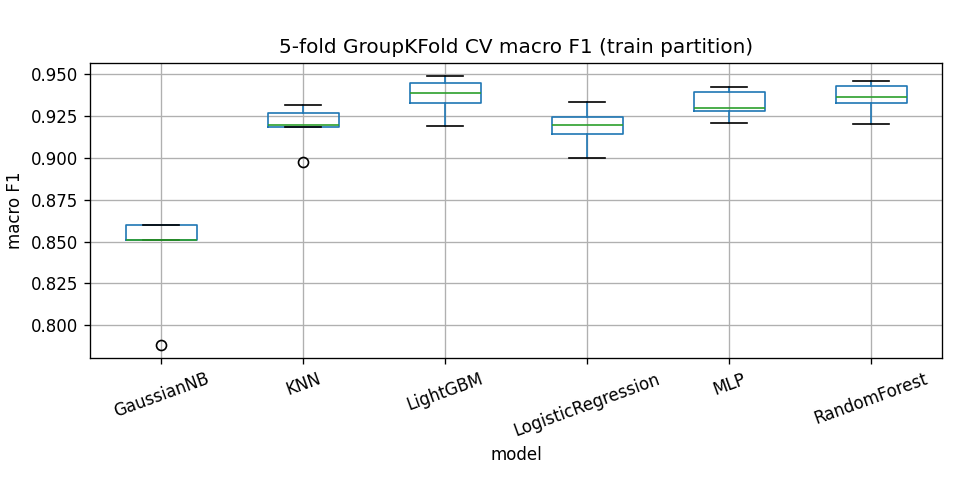
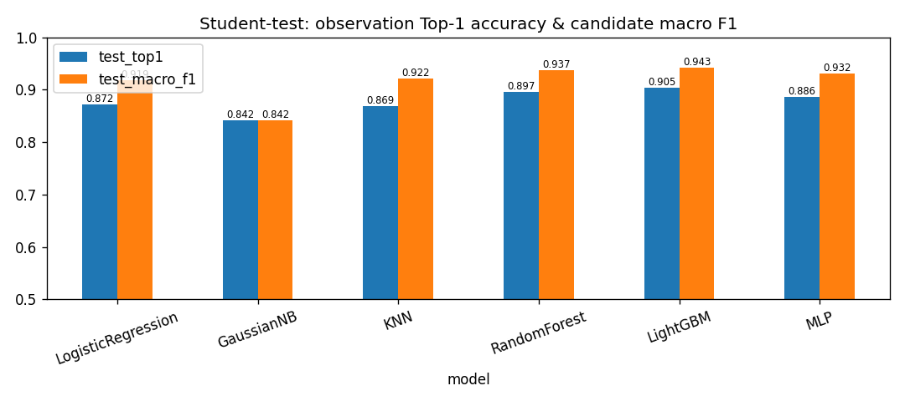
Cross-validation macro F1 across folds (left); student-test Top-1 and macro F1 (right).
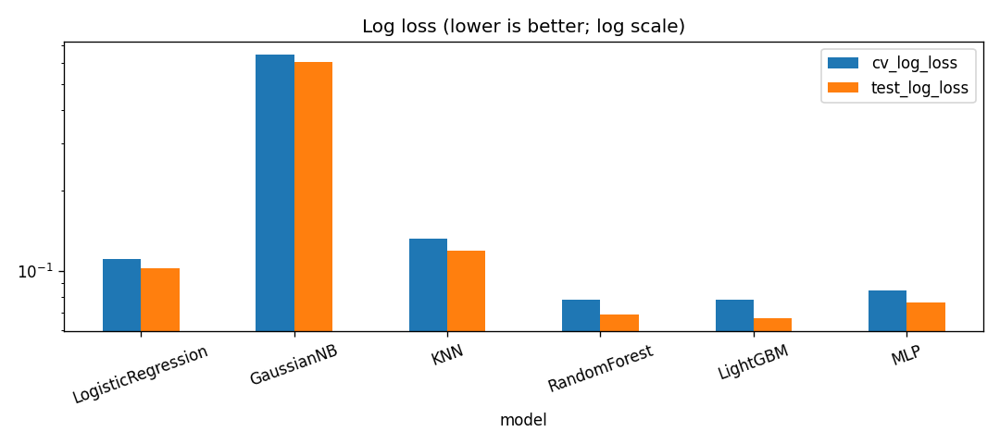
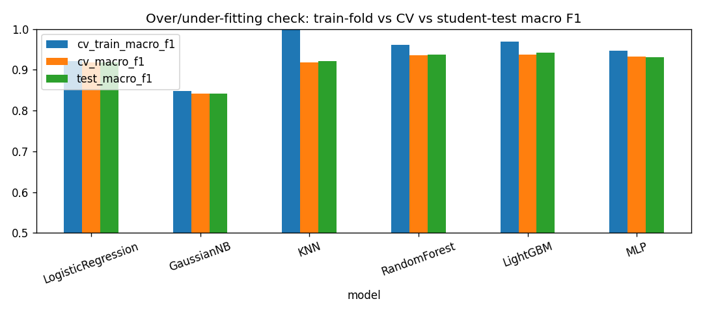
Log loss, CV and test (left); train-fold vs CV vs test macro F1, used as the overfitting check (right).
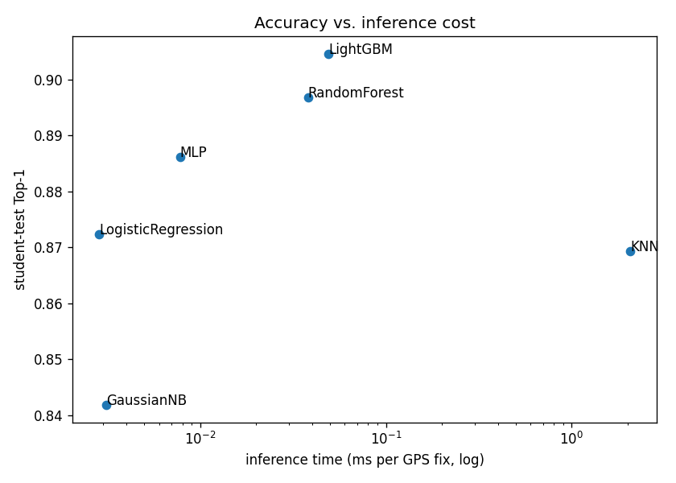
Accuracy vs inference cost.
A. Why suitable / strengths and limitations. It is a fast probabilistic baseline that produces probabilities directly. However, it assumes the features are conditionally independent and Gaussian. Our features are strongly correlated (distance, contextual distance, previous and next distances) and heavy-tailed. Naive Bayes therefore double-counts the same evidence and is overconfident.
B. Configuration. var_smoothing = 1e-9 (default). Fitted by maximum likelihood of the class-conditional Gaussians.
C. Results. Student-test Top-1 0.842, macro F1 0.842, log loss 0.608, by far the worst calibration. Underfitting: train-fold F1 0.849, CV 0.842 and test 0.842 are all low and nearly equal, so the model is too simple rather than overfitting. CV variance is also the highest (±0.030, with one fold at 0.79).
A. A linear, well-calibrated probabilistic model. It is a good test of how much of the signal is linear in our features. Its limitation is that it cannot model interactions. For example, heading is only informative when speed is above zero.
B. StandardScaler, L2 penalty, C = 1.0, lbfgs, max_iter 500. Objective: regularised binary cross-entropy (log loss).
C. Test Top-1 0.872, macro F1 0.919, log loss 0.102. Train-fold F1 0.922 vs CV 0.918 is almost no gap, so there is no overfitting. Its accuracy plateaus below the tree models, which indicates mild underfitting caused by its linear decision boundary.
A. Candidates that look alike in feature space (similar distance and heading patterns) should share labels. The weaknesses are sensitivity to feature scaling, the cost of storing the training set, and slow prediction.
B. k = 31, distance weighting, StandardScaler, 150k-row training sample. There is no loss function; it is a lazy learner that predicts a weighted vote of neighbours.
C. Test Top-1 0.869, macro F1 0.922, log loss 0.120. Inference is the slowest at 2.06 ms per fix, about 40× slower than LightGBM. Overfitting: train-fold F1 is 1.000, because distance weighting makes each training point its own neighbour, while CV is 0.919. It memorises the training data rather than generalising.
A. A non-linear model that can learn feature interactions. Its drawbacks are that it needs scaling and tuning, has less stable training, and is less interpretable.
B. Hidden layers (64, 32) with ReLU, Adam with learning rate 1e-3, batch size 1024, α = 1e-4 (L2), early stopping on a 10 % validation split (patience 5), max 40 epochs, 400k-row sample. Loss: binary cross-entropy plus L2.
C. Test Top-1 0.886, macro F1 0.932, log loss 0.076. Train-fold F1 0.947 vs CV 0.932 is a small gap. The real training curve below shows the loss decreasing and validation accuracy flattening, which triggered early stopping. That is no significant overfitting.
A. A bagged tree ensemble. It captures non-linear rules such as "small distance AND matching heading", and it is robust to feature scale and outliers. Its limitations are a large model file (35 MB) and slower training.
B. 200 trees, max_depth 18, min_samples_leaf 10, max_features √d, 600k-row sample. Splits are chosen to minimise Gini impurity.
C. Test Top-1 0.897, macro F1 0.937, log loss 0.069, second best overall. Train-fold F1 0.962 vs CV 0.936 shows mild overfitting, which is typical for deep trees, but test performance matches CV, so it generalises.
A. Gradient-boosted trees. Each new tree corrects the errors of the previous ones. It handles feature interactions and mixed scales, and it is fast on more than 1 M rows. A limitation is that it has many hyperparameters and can overfit when there are many leaves.
B. Initial values: 400 trees, learning rate 0.05, 63 leaves, subsample 0.8, colsample 0.8. Objective: binary log loss.
C. It is best on every metric: test Top-1 0.905, macro F1 0.943, log loss 0.067, route continuity 0.951. Train-fold F1 0.969 vs CV 0.937 is a moderate gap. However, the real train and validation loss curve (8 held-out trips) keeps decreasing without the validation loss rising, and test F1 is at least as good as CV, so it does not overfit in a harmful way.
Selection rationale. Highest CV macro F1, highest student-test Top-1 and F1, best-calibrated probabilities (important for the HMM emissions), stable folds (±0.012), and training about 2× faster than Random Forest.
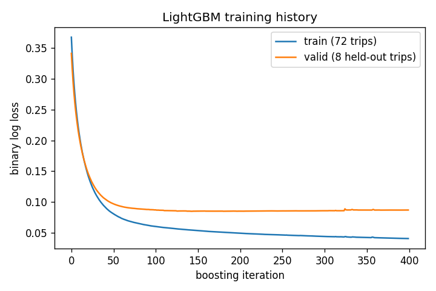
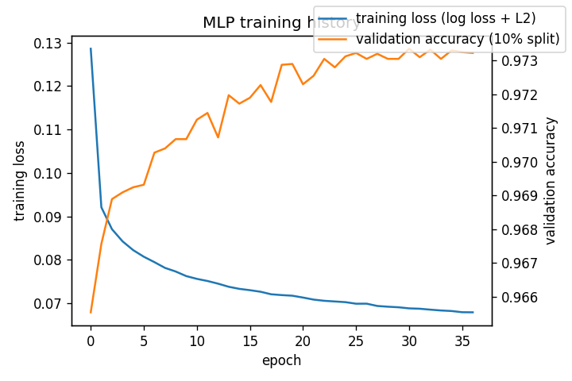
Real training histories, shown only for the models that train iteratively: LightGBM train/valid log loss per iteration, and MLP training loss and validation accuracy per epoch.
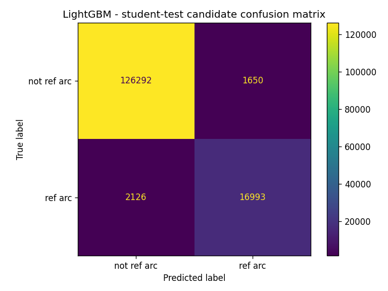
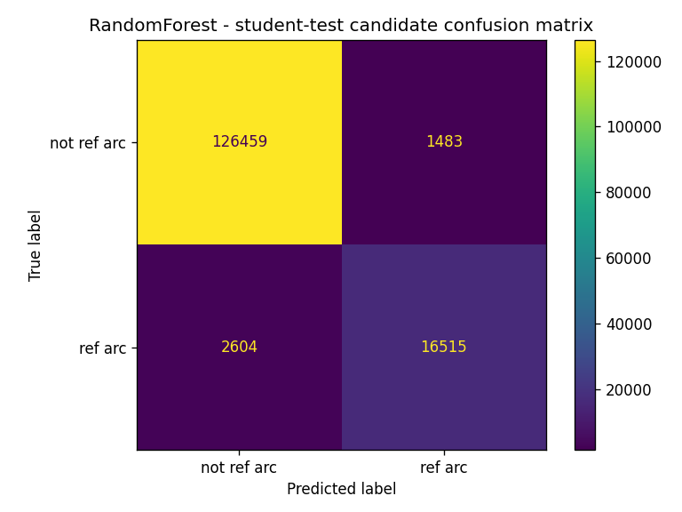
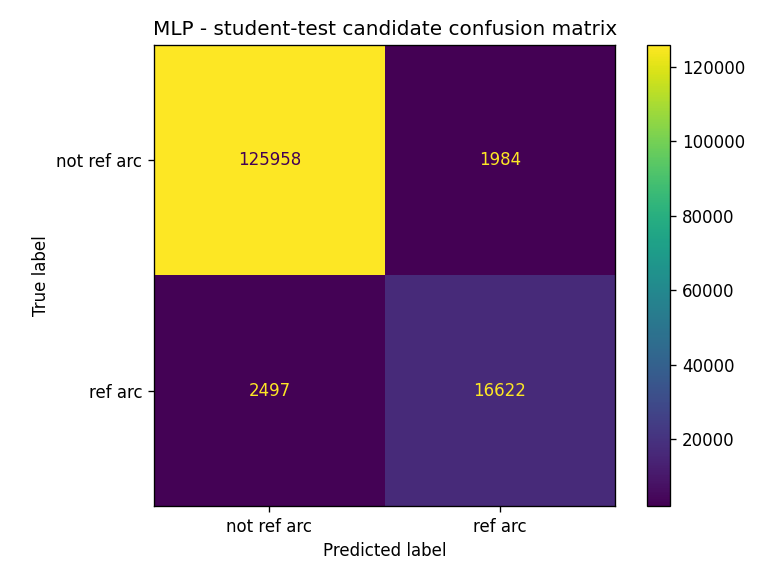
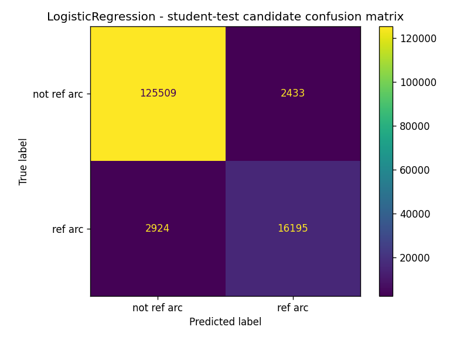
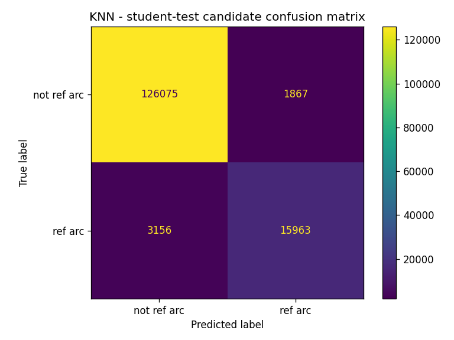
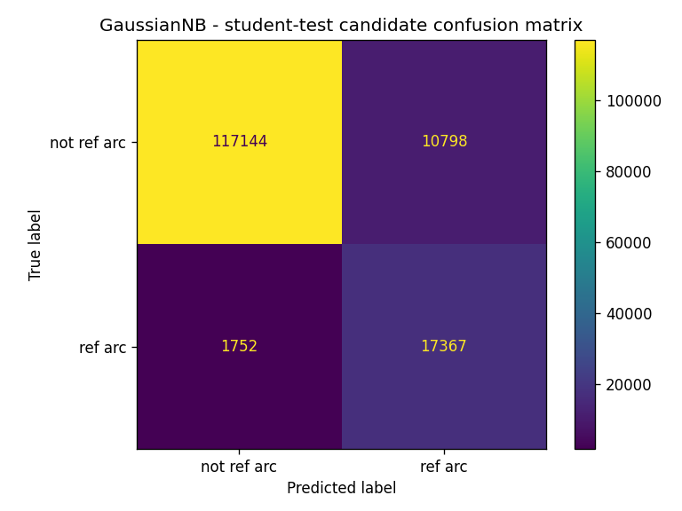
Student-test candidate-level confusion matrices for all six models.
| Model | CV macro F1 | CV log loss | Student-test Top-1 | Student-test macro F1 | Test log loss | Model size |
|---|---|---|---|---|---|---|
| LightGBM untuned | 0.9388 | 0.0770 | 0.9046 | 0.9426 | 0.0667 | 400 trees |
| LightGBM tuned | 0.9389 | 0.0752 | 0.9021 | 0.9431 | 0.0657 | 142 trees |
The tuned model has slightly better F1 and log loss, and Top-1 is 0.25 points lower. The default configuration was already close to the optimum for these features. Most of the gain came from feature engineering, not hyperparameters. We kept the tuned model as final_model.joblib because it uses about 3× fewer trees, which makes inference cheaper, and because its probabilities are slightly better calibrated for the HMM. A limitation is the small trial budget, imposed by the hackathon time limit. scripts/04_bayes_opt.py --trials 30 --search-frac 1.0 --cmp-folds 5 runs the full search.
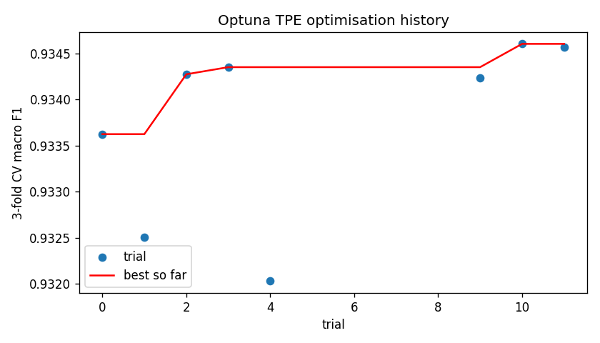
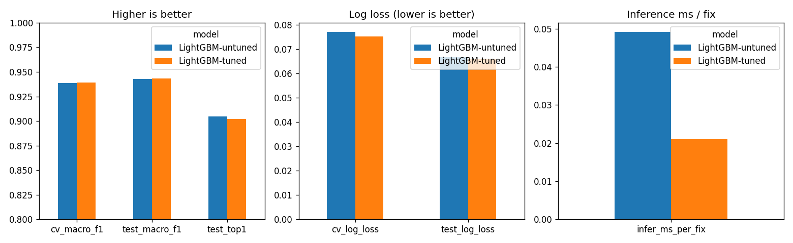
Optuna optimisation history (left); tuned vs untuned (right).
log e = we·log(p/Σp).log A = −|r − g| / β, where r is the driving distance between the two projected positions and g is the straight-line distance between the fixes.δt(j) = et(j) + maxi[δt−1(i) + log A(i→j)], computed in log space with back-pointers.min(3000 m, 2g + 50·Δt + 50).| 10 student-test trips (19,160 fixes) | Classifier only | Classifier + HMM |
|---|---|---|
| Observation Top-1 accuracy | 0.902 | 0.926 |
| Route continuity | 0.953 | 0.979 |
| Route F1 (length-weighted arc overlap; sequence level) | 0.956 | 0.983 |
The HMM improves 9 of 10 trips. For example, trip 00000077 goes from 0.786 to 0.829, trip 00000076 from 0.937 to 0.979, and trip 00000000 from 0.959 to 0.986. Where it did not help: in trip 00000007, Top-1 fell from 0.969 to 0.890. The vehicle is parked for about 150 fixes at the end of the trip on a two-way street. With no motion there is no heading, both directions are equally close, and the decoder settles on the reverse arc. Route F1 still rose slightly (0.989 → 0.991). Note that we = 0.25 lies at the edge of the searched grid, so a wider search may help further.
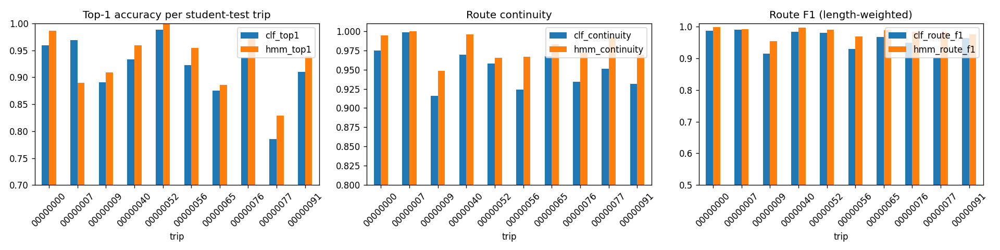
Per-trip classifier-only vs classifier + HMM: Top-1, continuity and route F1.
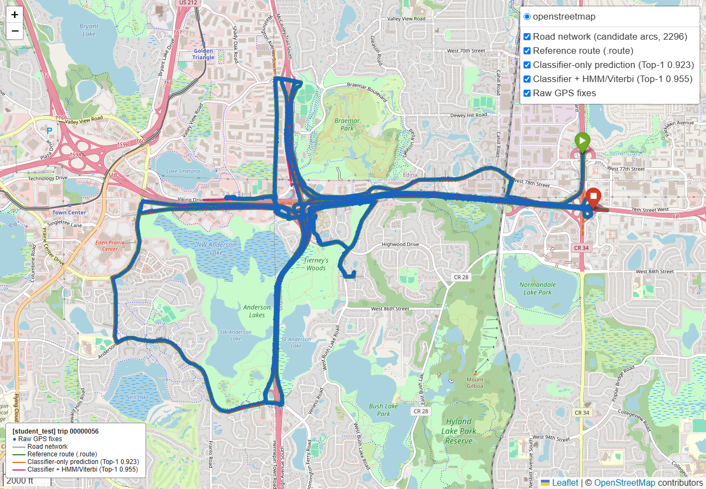
Student-test trip 00000056. Layers: raw GPS fixes (blue dots), road network candidate arcs (grey), reference route (green), classifier-only prediction (orange, dashed) and classifier + HMM prediction (pink). The legend is bottom-left and the layer control top-right. Interactive files: maps/student_test_<trip>.html, generated by scripts/06_make_maps.py and src/pathsnap/viz.py.
Laptop 1 runs the FastAPI backend: uvicorn api.main:app --host 0.0.0.0 --port 8000, with PATHSNAP_EVAL_DIR pointing to the evaluation trips. The endpoints are:
GET /trips: lists the trip ids only.POST /predict {trip_id}: runs the full pipeline.GET /map/{trip_id}: returns the Folium map.Leakage safeguards. The predictor loads trips without .route. The reference route is read only in api/evaluator.py, after prediction has finished. Only aggregate metrics are returned; the route is never sent to the UI.
Laptop 2 runs the UI: python ui/serve.py. It lists the 10 trips, sends the selected trip_id to the API, and draws the GPS fixes and predicted route with the server-side metrics.
Two-laptop deployment test. Both laptops were on the same network. Laptop 1 ran the API at 10.110.92.233:9000; ports 8000 and 8080 fall inside a Windows reserved port range (7985–8084) on that machine, so port 9000 was used. Laptop 2 (10.110.92.209) ran the UI.
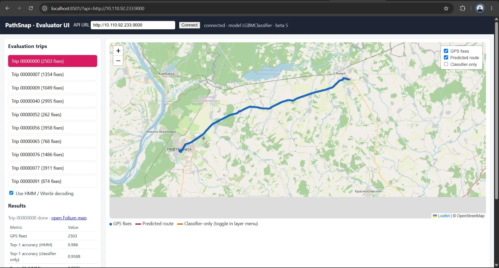
Evaluator UI on Laptop 2, connected to the API on Laptop 1. Trip 00000000: HMM Top-1 0.986, classifier-only 0.9588.
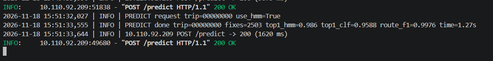
API console on Laptop 1 (the receiving laptop). The request from Laptop 2 (10.110.92.209) runs the full pipeline: PREDICT done trip=00000000, top1_hmm=0.986, route_f1=0.9976, 1.27 s, HTTP 200.
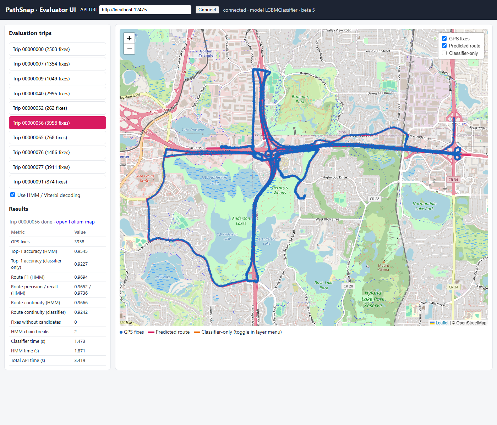
Additional run of the same UI: trip 00000056 (HMM Top-1 0.9545, classifier-only 0.9227, route F1 0.9694, 3.4 s).
API console log from additional test requests (captured output):
INFO: Uvicorn running on http://0.0.0.0:12475 (Press CTRL+C to quit) 2026-11-18 14:18:42,533 | INFO | PREDICT request trip=00000056 use_hmm=True 2026-11-18 14:18:46,886 | INFO | PREDICT done trip=00000056 fixes=3958 top1_hmm=0.9545 top1_clf=0.9227 route_f1=0.9694 time=3.42s 2026-11-18 14:18:56,628 | INFO | PREDICT request trip=00000077 use_hmm=True 2026-11-18 14:18:59,236 | INFO | PREDICT done trip=00000077 fixes=3911 top1_hmm=0.8289 top1_clf=0.7857 route_f1=0.9822 time=2.18s 2026-11-18 14:18:59,695 | INFO | PREDICT request trip=00000000 use_hmm=True 2026-11-18 14:19:01,104 | INFO | PREDICT done trip=00000000 fixes=2503 top1_hmm=0.986 top1_clf=0.9588 route_f1=0.9976 time=1.13s